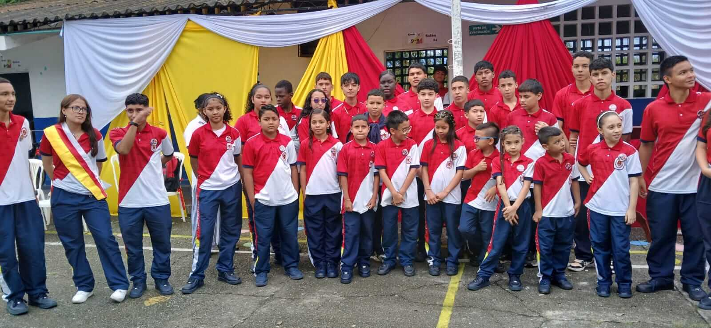
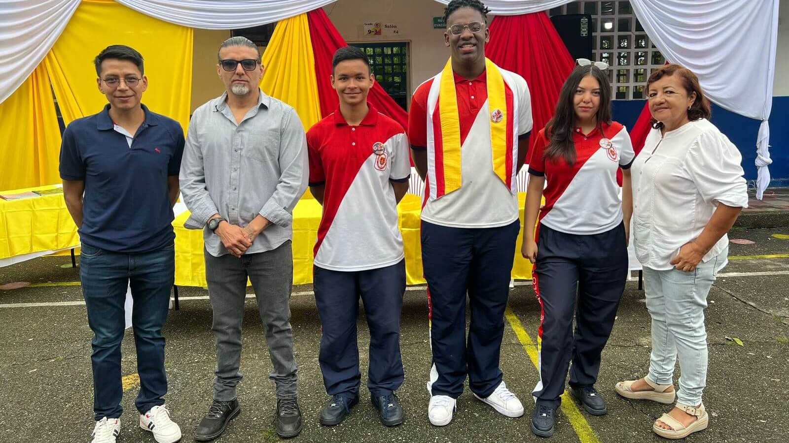
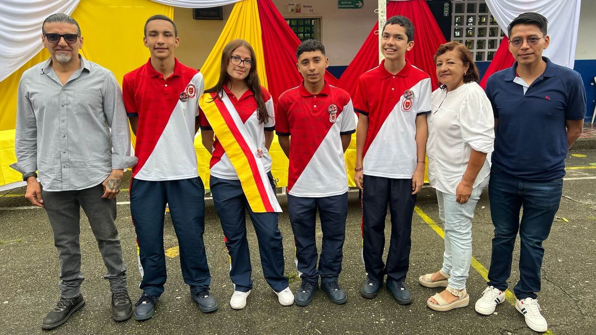

La Personería Estudiantil es el mecanismo de participación democrática que representa a los estudiantes ante las directivas del colegio. Su objetivo principal es velar por los derechos y deberes de los estudiantes, promover la convivencia pacífica y ser el puente de comunicación entre la comunidad estudiantil y las autoridades del colegio. El personero y su equipo trabajan en iniciativas que fomentan el bienestar, la inclusión y el desarrollo integral de los estudiantes.
Conoce más sobre PersoneríaLa Contraloría Estudiantil es el órgano encargado de promover la transparencia y el buen uso de los recursos del colegio. Su función principal es supervisar que los fondos y bienes del colegio se utilicen de manera eficiente y responsable. El contralor y su equipo fomentan una cultura de honestidad y responsabilidad entre los estudiantes, asegurando que las decisiones se tomen en beneficio de toda la comunidad.
Conoce más sobre Contraloría